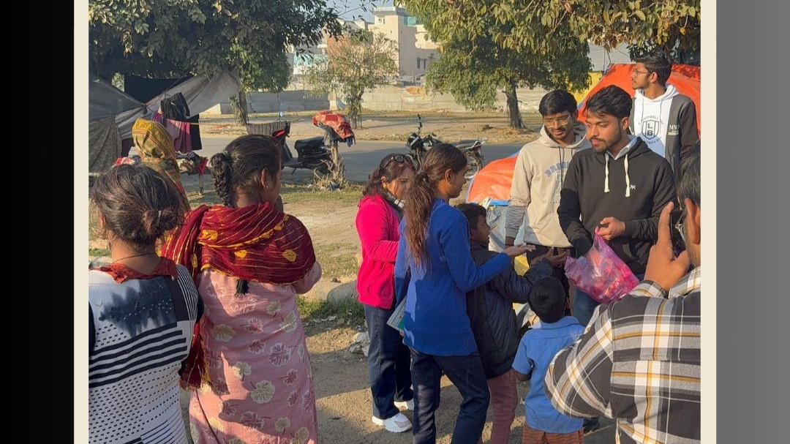
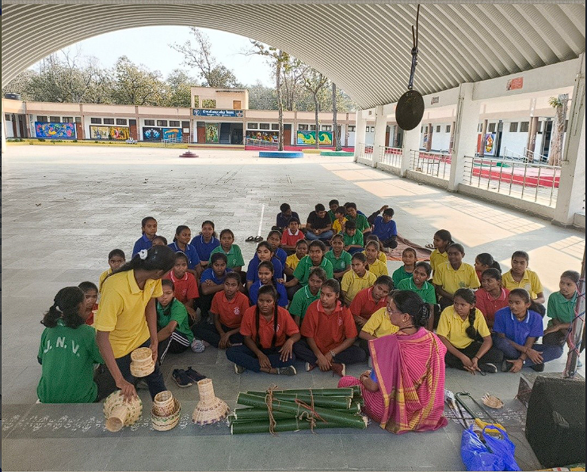
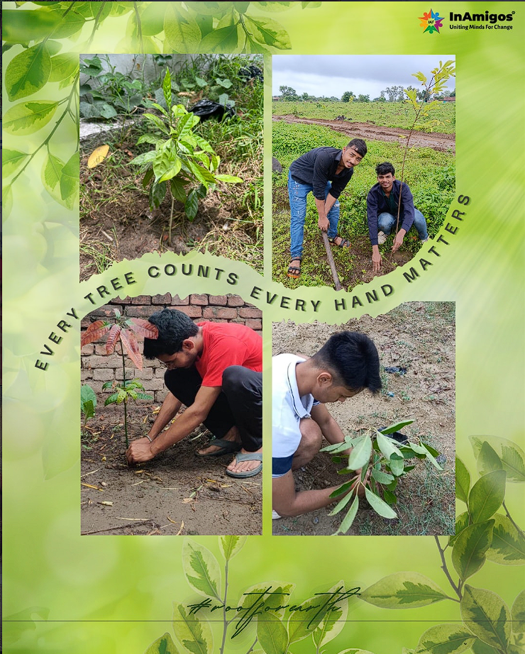
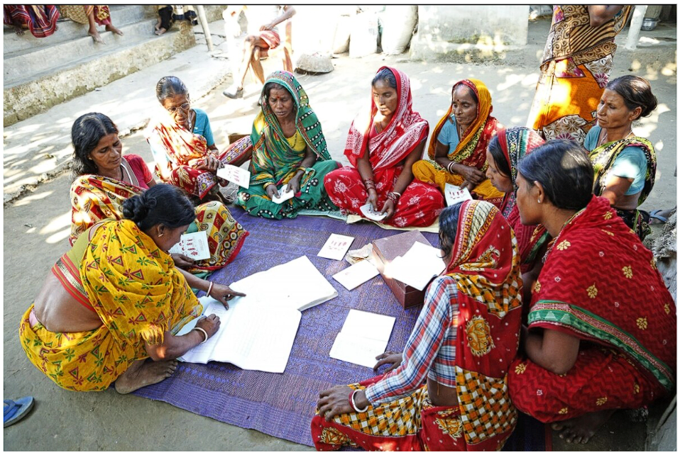
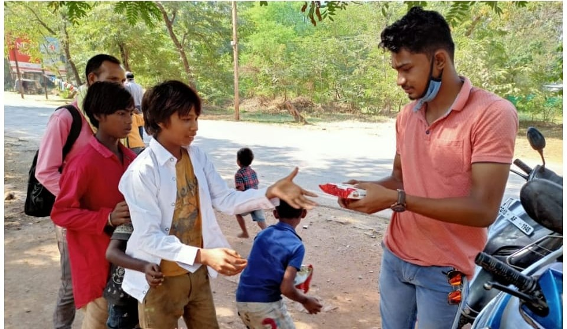
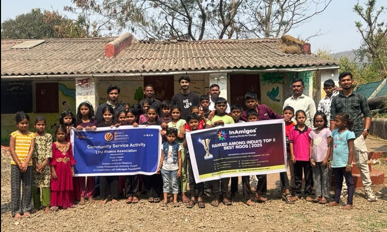

Our Work in Action
Stories Captured






InAmigos Foundation is a government-licensed NGO working across India — feeding the hungry, educating children, empowering women, protecting animals, and nurturing the planet.

InAmigos Foundation was founded on 23rd September 2020 by Mr. Govind Shukla, with a single conviction — that uniting everyday people around common causes can transform lives. Registered as a Section 8 registered non-profit under the Companies Act 2013 and licensed by the Central Government, we operate across multiple Indian states.
Our mission is to serve communities compassionately. Our vision is to create opportunities for every underprivileged person to grow with dignity and respect. From Chhattisgarh to West Bengal, from Haryana to pan-India internship networks, InAmigos is expanding — one life at a time.
With a strong volunteer network of dedicated professionals, CSR partners, and individual donors, we deliver measurable, lasting change — not just relief.
Each project targets a specific gap in society — together they form a complete ecosystem of care.
Distributing meals and clothing to people living in poverty, ensuring no one goes to bed hungry. Food distribution drives are conducted regularly with government support during relief work.
Bringing quality education, study materials, and mentorship to underprivileged children in rural areas — nurturing their dreams and shaping brighter futures in communities with limited access.
"Udaan" means flight. This flagship initiative provides skill training, financial literacy, and entrepreneurship guidance to rural women — turning them into confident, economically independent leaders.
Every tree is a gift to future generations. Prakriti conducts plantation drives, eco-awareness campaigns, and clean-up events — involving local communities in building a greener, healthier India.
Compassion extends to all living beings. JEEV volunteers rescue, treat, and feed stray and injured animals daily, advocating for humane treatment and the right of every creature to live with dignity.
Building youth employability through internship programs in digital marketing, content writing, finance, HR, research, and more — bridging the gap between education and real-world careers.
Every figure represents a life touched, a barrier broken, and a community strengthened.





Whether you give time, skills, or resources — every contribution matters enormously.
Join hands on the ground. Participate in food drives, education camps, plantation events, and more across India.
Gain real-world experience through Project Vikas internships in content, marketing, research, and social work.
Even ₹100 can make a difference. Donors receive 80G tax benefits and full transparency on fund utilization.
Join thousands of volunteers and supporters who are already building a more compassionate India with InAmigos Foundation.
Join Us Today